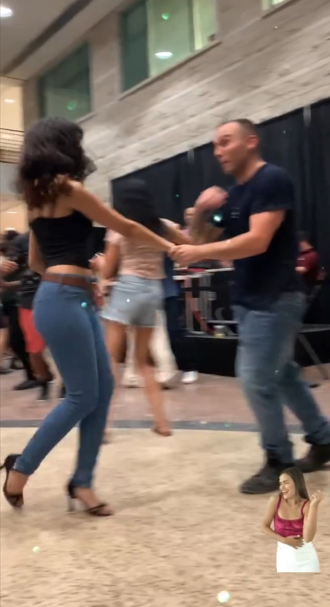
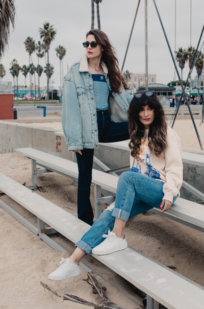
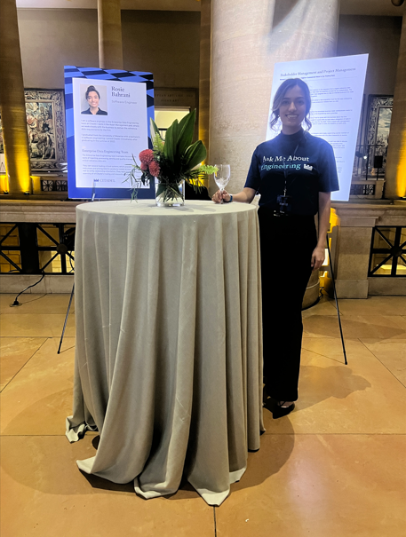
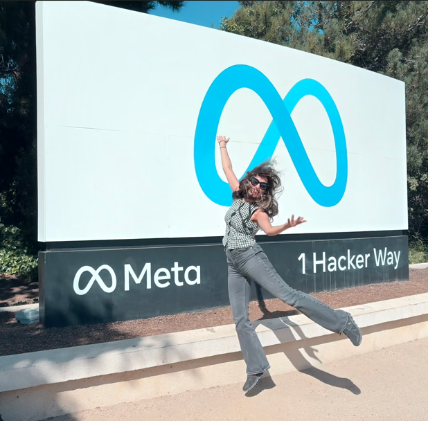

Welcome to my biographical homepage! In this section, I will be discussing more about me. Here are some details about
my academic and professional background and my personal and professional interests and aspirations.
Hobbies

Ball room dancing is a hobby that I picked up 6 years ago. I started with Waltz, and moved on to Salsa,
Bachata later on. Over the years, I have noticed that dancing has become a way for me to unwind, meet new people,
learn more about coordination, discipline and the power of practice.

Modeling is another hobby that I picked up 3 years ago. This hobby has been a way for me to express myself, improve
my self-confidence and be more comfortable in front of the camera. Through this hobby, I have had the chance to
meet different photographers and videographers and learned about their creative journeys.
Work

Right after graduating from the University of Waterloo, I started my job at Citadel, which is a hedge fund in New York City.
This job was the inspiration behind choosing this project for DTSC-691. I was interested in finding a way to
use market sentiment and news analysis to predict the future of a stock.

Later in 2025, I started working at Meta. I have just joined the company and have completed onboarding. Throughout
my time here, I have worked on a few front-end projects in React native.
Future Aspirations
In the future, I would like to continue working in tech, expand my knowledge of the latest AI and machine learning
trends and start shifting my career towards a machine learning engineering role. I believe that this route is
going to be the most relevant specialty in Software Engineering in the next couple of years.